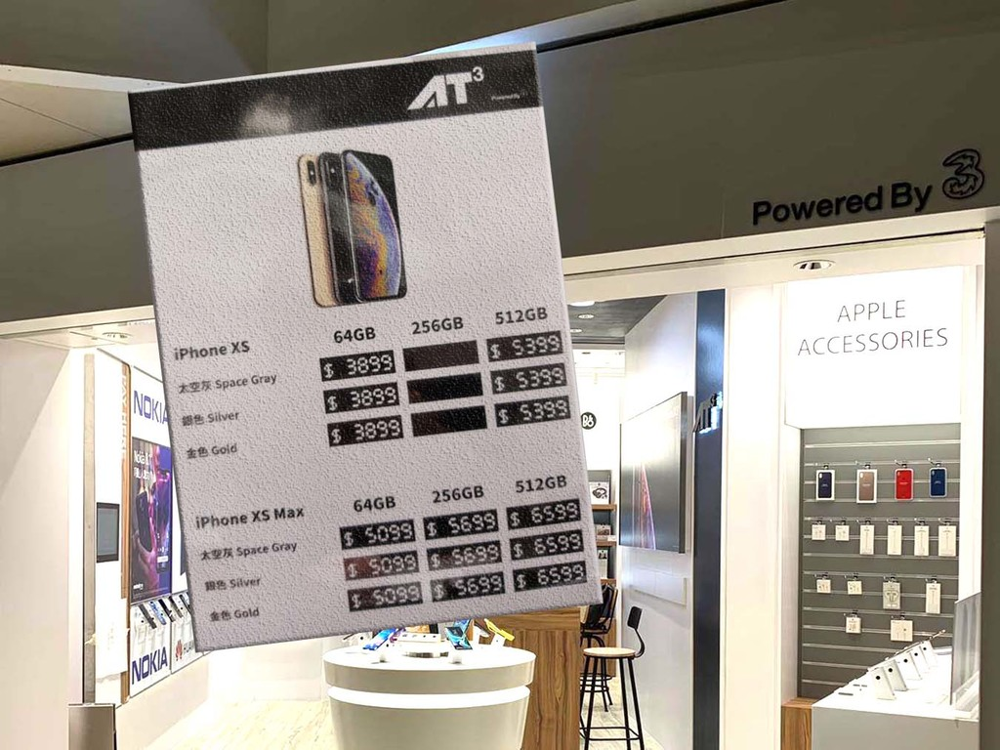

{% extends "base.html" %}
{% block current_app_content %}
    <h1>Apple iPhone XS 勁劈至 HK＄3899！抵玩過 iPhone SE？</h1>
    <br>
    
    <br><h3>
    <a><font color="#000000">Apple iPhone SE 推出僅 1 星期，在中價機市場大受歡迎。不過今次有電訊商將 iPhone XS 系列全綫劈價，HK$3,899 就有 iPhone XS，雖然 CPU 係 Apple 上一代的 A12，但擁有雙鏡頭、Face ID、更靚嘅屏幕等，吸引度極高！</font></a>。
    <br>
    <br>
    <li>iPhone XS 64GB 僅 HK$3,899</li>
    <li>iPhone XS Max HK$5,099 起</li>
    <li>AT3 Powered by 3 門市限定</li>
    <br>
    <a><font color="#000000">ezone.hk 記者在柴灣 AT3 Powered by 3 門市發現此優惠，無需上台，即可享有 iPhone XS 凈機優惠，以 iPhone XS 64GB 為例，初推出的原價是 HK$8,599，現時只需 HK$3,899，亦即原價約 45 折！比起 iPhone SE 64GB 嘅 HK$3,399 只係多 HK$500，就有雙鏡頭拍攝。
        <br>
        <br>
        iPhone XS 有 64GB、512GB 揀；iPhone XS Max 更有齊 64GB、256GB 及 512GB 揀，劈價幅度一樣高呢！大家要留意係，呢個優惠只在 AT3 Powered by 3 門市提供，3HK 直營門市並無此優惠，另今批貨清晒就無了。</font></a>
    <br><br>
    <a href="{{ url_for('main.sm') }}"><font color="#9966ff">{{ _('【相關報道】Samsung 正開發 2 億像素感光元件！預計明年初推出') }}</font></a>
    <br>
    <a href="{{ url_for('main.intel10') }}"><font color="#9966ff">{{ _('【相關報道】Intel 十代 Core 正式登場！最高 10 核心‧5.3GHz Turbo 時脈') }}</font></a></h3>
{% endblock %}